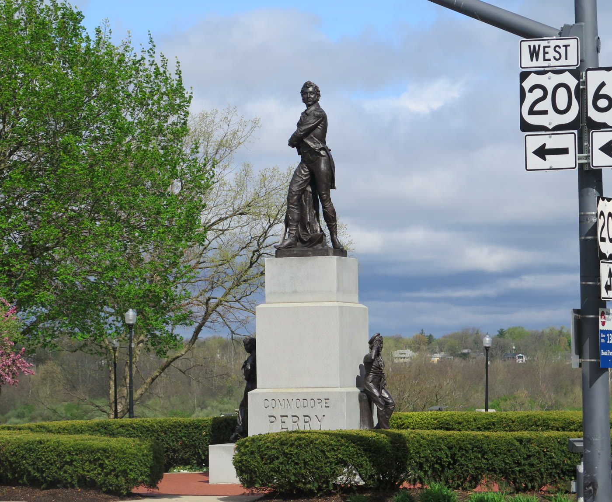

Perrysburg, Ohio, beside Hood Park
Commodore Perry statue in Perrysburg
The bronze at the foot of Louisiana Avenue is Commodore Oliver Hazard Perry, the naval officer the town is named for. Michigan sculptor Lynn Haynes made this copy. It was dedicated on 26 May 1997. The figure stands on the bluff over the Maumee, beside Hood Park. This is an independent Profitnet guide to that monument.


See it
- Monument
- Front Street and Louisiana Avenue, Perrysburg, Ohio 43551. Front Street here is Ohio 65, and U.S. 20 signs stand at the same corner. The bronze is outdoors. No ticket.
- Hood Park
- 105 West Front Street, the lot just west of the bronze. Picnic tables, benches, accessible parking, a boat dock, fishing, an accessible kayak launch, and a portable restroom. Phone 419-872-8020.
- Coordinates
- 41.560567 north, 83.6301 west. Map.
The bronze on the bluff
You are looking at a bronze copy, not the 1860 marble. The marker on the back of the monument says William Walcutt made the original in marble in 1860 for Cleveland, that Perrysburg set those originals up in 1937, and that Lynn Haynes of Michigan cast the bronzes. The Perrysburg Area Arts Council led the work, with the city. Popular subscription paid for it. The Perry figure and the new pedestal were dedicated on 26 May 1997, Memorial Day. The midshipman and the cabin boy were finished a year later.
The pedestal carries the words Commodore Perry. In the 2025 photograph, Perry stands with his arms crossed in a naval coat, and the two smaller bronzes sit at the foot of the stone. The group is at the north end of Louisiana Avenue, the downtown business street, on the high ground over the river. The National War Memorial Registry files it as a War of 1812 memorial at that corner, with public access, and gives 1937 as the year dedicated. That year is the marble installation. The bronze you walk up to is the 1997 monument.
The City of Perrysburg places the bronze with Hood Park, 105 West Front Street. Historic Perrysburg places the park just west of the statue and the statue at the foot of Louisiana Avenue. Same corner. The bronze is the Perry monument. The stone soldier in the park grass is a different memorial.
The marble that came first
Cleveland City Council voted in June 1857 to honor Perry in Public Square. Thomas Jones & Sons of Cleveland took the contract. William Walcutt, a sculptor from Columbus who had studied in London and Paris and kept a studio in New York, carved the figure. The Messenger Journal dates his contract to 14 October 1857. The marble came from Carrara. Historic Perrysburg and the journal both give the figure as 8 feet 2 inches tall. The journal calls the original a two-ton statue.
The monument was unveiled on 10 September 1860, the 47th anniversary of the Battle of Lake Erie. Perry's son was there, and so were veterans of the fight. Speeches that day included Harvey Rice, historian George Bancroft, and the governors of Ohio and Rhode Island. Perry himself had died at sea of yellow fever in 1819, at 34, so he was not there. The midshipman and the sailor boy were still plaster in 1860. They were carved in marble and installed in 1869. The journal dates that installation to 8 December 1869.
The Cleveland monument moved more than once: from the center of Public Square to the southeast quadrant in 1878, into storage in 1892 for the Soldiers' and Sailors' Monument, to Wade Park in 1894, and to Gordon Park in 1913. Weather broke the marble down. In 1929 Cleveland replaced the figures with bronze copies made under sculptor Herman Matzen. A second bronze of Perry went to Rhode Island and stands on the State House grounds in Providence. The marble, no longer needed in Cleveland, was offered away.
Perrysburg asked for it in 1929. Sandusky and Put-in-Bay asked too. W. J. Veitch and other residents won it for the namesake town, and it came by freight train. The Depression left it in storage at the Eckhardt Monument Company in Toledo. On 18 September 1937 the town dedicated it. Civil War veteran S. John Croft, called the Drummer Boy of Shiloh, unveiled the figure. Perry stood on a pedestal in the middle of a concrete base, with the sailor and midshipman at either side. The lower part of that base once held public restrooms, later closed after vandalism and disrepair. Winters, the city boxed the marble in wood.
By 1966 the concrete was failing. The figures came down and the base was demolished. On 17 December 1966 Perry alone was rededicated on a green granite pedestal. The Country Garden Club gave $2,000 toward that base, and city council approved $6,500. The smaller marbles moved to the courtyard of the municipal building. Weather kept working on the stone. In 1996 the campaign for bronze copies began, using old photographs to recover the details. Haynes's Perry went up the next Memorial Day.
The marble Perry then spent about five years in storage. On 27 February 2002 it went back through Cleveland on the way to Lake Erie. Its dedication at the visitor center was 22 May 2002. It is on long-term loan from the city to the National Park Service, inside the visitor center at Perry's Victory and International Peace Memorial in Put-in-Bay, on South Bass Island. The smaller marble sailor and midshipman are in the lobby of the municipal building on West Indiana Avenue in Perrysburg. A plaster of the Perry figure, taken to be Walcutt's full-size model, is in the Western Reserve Historical Society in Cleveland.
The Battle of Lake Erie
The fight was on 10 September 1813, on Lake Erie near Put-in-Bay. At dawn a lookout saw six Royal Navy vessels northwest of the harbor, beyond Rattlesnake Island. Perry's nine vessels got underway from Put-in-Bay at 7 a.m. The American brigs Lawrence and Niagara carried 20 guns each. The British ships, under Commander Robert Heriot Barclay, relied on longer guns. The American ships relied on carronades, which hit harder and reached less far, so Perry needed to close.
Lawrence flew the words of the dead Captain James Lawrence: Don't give up the ship. The flagship was battered. Perry left it and rowed to the Niagara, then took the Niagara through the British line. A few minutes after 3 p.m. the four largest British vessels surrendered. The schooner Chippewa and the sloop Little Belt were caught as they tried to run. The whole British squadron was taken. Near West Sister Island, Perry wrote to General William Henry Harrison on the back of an old envelope.
We have met the enemy and they are ours. Two ships, two brigs, one schooner and one sloop.
Each side had about 500 men. Barclay's squadron lost 135 killed and wounded, Barclay among the hurt. Perry's squadron had 123 casualties. The victory gave the United States control of Lake Erie. The British left Fort Malden, at present-day Amherstburg, and fell back up the Thames. Harrison followed, retook Detroit, and carried the campaign into Canada. Fort Meigs, the American post on this river, is the fort the path from Hood Park runs toward.
Hood Park, and the soldier who is not Perry
Hood Park is the small lot west of the bronze, from Front Street down toward the riverbank. Its own monument is a color bearer in a Civil War uniform, not the commodore. Eckhardt Monument Company of Toledo made it of hammer-dressed Vermont granite, 27 and a half feet high. The inscription is a tribute to the soldiers and sailors of Perrysburg Township, 1901. About 1,000 people saw the unveiling on 24 May 1902. John Hood, a retired farmer, had bought the lot. For years people called the place Monument Park.
The city lists picnic tables, benches, accessible parking, the Louisiana Avenue boat dock, fishing, an accessible kayak launch, a portable restroom, and a multiuse path. The path runs to Orleans Park and on to Fort Meigs. A viewing area looks out on Audubon Island in the Maumee. The phone for public service is 419-872-8020. The boat dock phone is 419-872-8010.
Three bronzes, one marble
Walcutt's design exists in more than one place. This page is the Perrysburg bronze at Front and Louisiana, cast by Lynn Haynes and dedicated in 1997, with the smaller figures finished in 1998. Cleveland's own bronze copies, made under Herman Matzen and unveiled in Gordon Park in 1929, have stood since 1991 in Fort Huntington Park, beside the Cuyahoga County Courthouse. Rhode Island's bronze of Perry stands on the State House grounds in Providence. The 1860 marble Perry is indoors at Put-in-Bay. If you came for the column on South Bass Island, that is Perry's Victory and International Peace Memorial, a different structure from the statue on this bluff.
Questions
Where does the statue stand?
It stands at the foot of Louisiana Avenue where that street meets Front Street in Perrysburg, Ohio 43551, beside Hood Park at 105 West Front Street. The bronze is outdoors on the bluff over the Maumee River.
When was the Perrysburg monument dedicated?
The marble figures were dedicated in Perrysburg on 18 September 1937. The bronze Perry and its pedestal were dedicated on 26 May 1997. The bronze midshipman and cabin boy were finished a year later.
Who made the bronze?
Michigan sculptor Lynn Haynes made the bronze copies. The design is William Walcutt's 1860 marble, carved in Cleveland for the Battle of Lake Erie.
Where is the original marble?
The marble Perry is on loan to the National Park Service and stands in the visitor center at Perry's Victory and International Peace Memorial in Put-in-Bay. The smaller marble figures are in the lobby of the Perrysburg municipal building on West Indiana Avenue.
Sources
- Historical Marker Database, Commodore Oliver Hazard Perry. The marker text: Walcutt, 1937, Lynn Haynes, and the 26 May 1997 dedication.
- City of Perrysburg, Hood Park. The bronze at the park, 105 West Front Street, and the park features.
- Historic Perrysburg, Commodore Perry. The marble's move to Perrysburg, the 1937 and 1997 monuments, and where the marble is now.
- Historic Perrysburg, Hood Park. The park west of the bronze, and the 1902 soldiers and sailors monument.
- Perrysburg Messenger Journal, 17 February 2021. Walcutt's contract, the 18 September 1937 unveiling, the 1966 pedestal, and the 22 May 2002 dedication at Put-in-Bay.
- Perry Monument (Cleveland). The Cleveland moves, Herman Matzen's bronzes, and the Rhode Island State House copy.
- National Park Service, The Battle of Lake Erie. The 10 September 1813 action and Perry's message.
- National Park Service, The enemy is ours. Casualties and the campaign after the battle.
- National War Memorial Registry. Front Street and Louisiana Avenue, public access, War of 1812, year dedicated 1937.
Last updated .